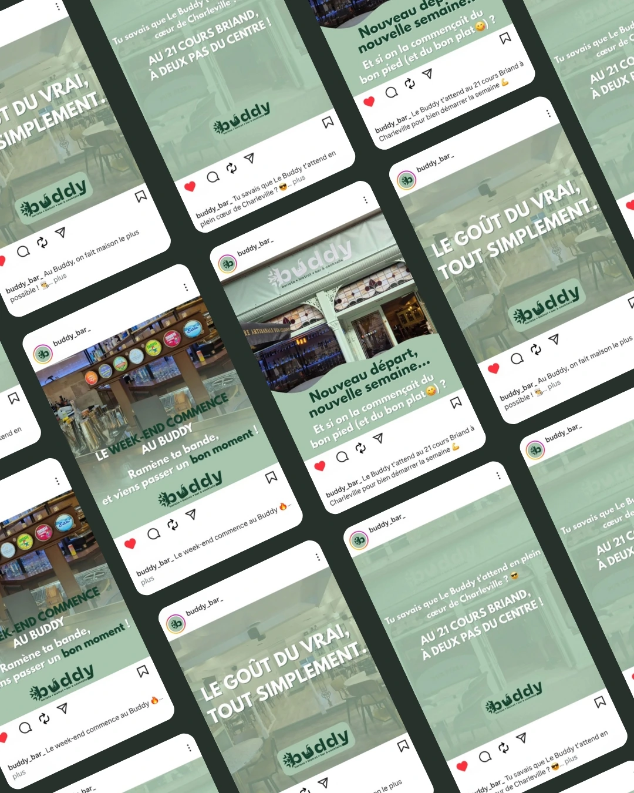
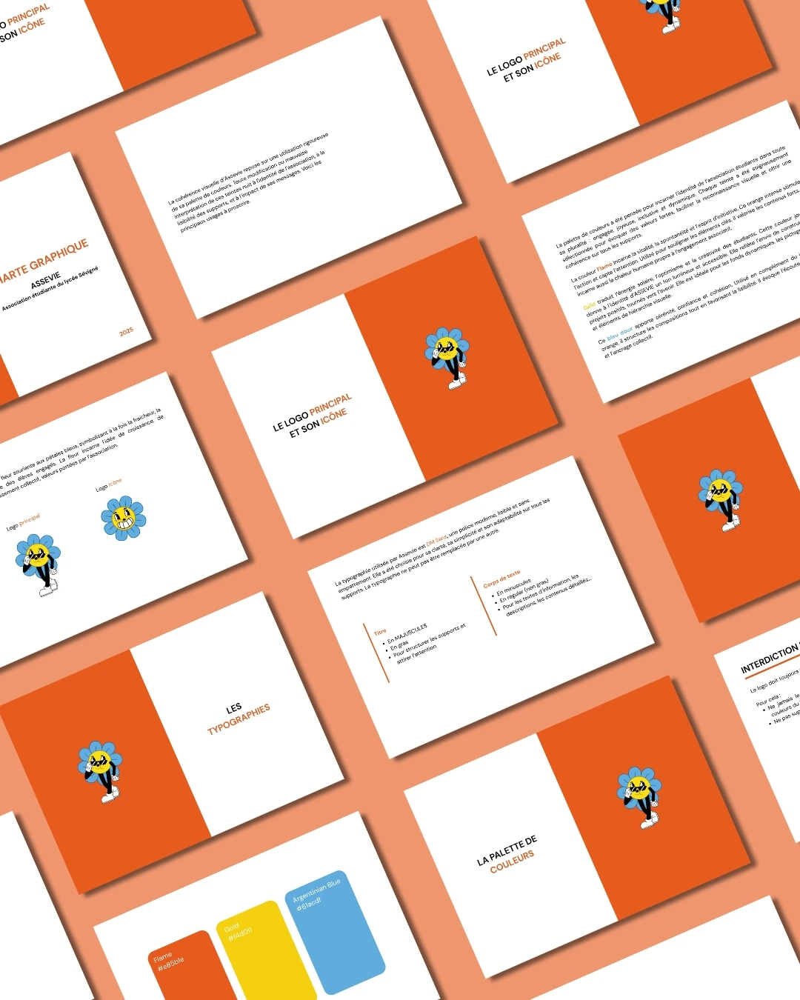

 Réseaux sociaux Réseaux sociaux Marketing digital Le Buddy Stratégie de contenu digital pour restaurant avec création de contenus. 2025 • Marketing digital
Stratégie de communication Communication Média local Radio Bouton Stratégie communication complète pour un média local avec gestion de 3 réseaux sociaux. 2025 • Stratégie
 Assevie Identité visuelle Charte graphique Assevie Identité visuelle complète pour association étudiante. 2025 • Identité visuelle